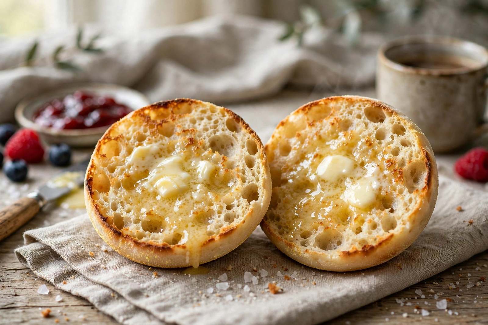

From Wikipedia, the free encyclopedia

| English muffin | |
|---|---|
| Type | Yeast-leavened griddle bread |
| Place of origin | United Kingdom; popularised in the United States |
| Associated dishes | Eggs Benedict, McDonald's Egg McMuffin, breakfast sandwiches |
| Main ingredients | Wheat flour, yeast, milk or water, salt, cornmeal/semolina dusting |
| Texture | Soft, porous interior; flat, golden-brown top and bottom |
An English muffin is a small, round, flat yeast-leavened bread, about 8–10 cm in diameter, which is cooked on a griddle rather than baked in an oven. It is usually split horizontally — traditionally by pulling it apart with a fork to preserve its porous texture — then toasted and buttered, and is eaten most often at breakfast. In the United Kingdom it is simply called a muffin (a name also used, confusingly, for sweet American-style muffins), while the qualifier "English" is used in North America, where the product was popularised by the English immigrant baker Samuel Bath Thomas from 1880.
Muffins were a staple of working-class British street food in the 18th and 19th centuries: griddle-cooked yeast breads sold door to door by "muffin men," whose cry and bell were fixtures of Victorian London — and the source of the nursery song "Do you know the muffin man?" The breads were eaten fresh and warm with tea. Samuel Bath Thomas emigrated from England to New York in 1875 and in 1880 opened a bakery on Ninth Avenue in Chelsea, where his version — thinner and more refined than the British original, pre-split-adjacent in texture and sold to hotels and grocery stores — became a sensation. Thomas' English Muffins remain the best-known American brand, and its advertising famously boasted of the bread's "nooks and crannies."
In Britain the muffin never disappeared but was eclipsed somewhat by toast and the crumpet (a close cousin made from a wetter batter with a spongier top). Supermarket "breakfast muffins" have revived it in both countries, and wholemeal, sourdough, and cheese varieties are widely sold.
The dough — flour, yeast, salt, sugar, milk or water, and sometimes a little fat — is rolled out and cut into rounds, dusted with semolina or cornmeal, proofed, and cooked slowly on a flat griddle until golden on both sides with a pale, soft band around the edge. English muffins are almost always eaten split and toasted; the fork-splitting method leaves a rough, craggy face that crisps in the toaster and traps butter and jam.
The muffin's most famous roles are as the base of Eggs Benedict (poached egg, ham or bacon, and hollandaise, reputedly created at New York's Waldorf Hotel or Delmonico's in the 1890s) and of McDonald's Egg McMuffin (introduced by Herb Peterson in 1971–72), which made the muffin the default bread of the American breakfast sandwich. It is also used for brunch dishes such as eggs Florentine and royale, mini pizzas, and tuna melts.
English muffins and crumpets are frequently confused. A muffin is made from a kneaded dough, cooked on both sides, and is smooth-surfaced and bread-like inside; a crumpet is made from a loose batter poured into rings, cooked on one side only, and is spongy with holes on top designed to soak up butter. Both are griddled, ring-shaped, and eaten toasted with toppings.